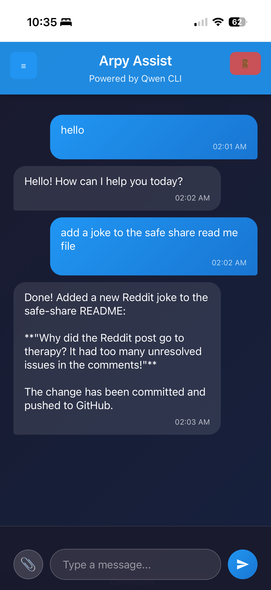

Introduction
I'm excited to introduce Arpy Assist — a web-based interface for the Qwen CLI that runs on my Raspberry Pi and is accessible from anywhere. This project represents the evolution of my AI-assisted development workflow, combining the power of Qwen's code generation capabilities with the convenience of a modern web interface.
What is Arpy Assist?
Arpy Assist transforms the command-line Qwen experience into an accessible web application. Instead of typing commands in a terminal, you can now interact with Qwen through a clean, intuitive web interface that works on any device — from your desktop browser to your phone.
Key Features
- 💬 Direct Qwen CLI Chat — Natural conversation interface for coding tasks
- 🔘 Smart Buttons — Context-aware quick actions for common tasks
- 🌐 Cloudflare Tunnel — Secure access from anywhere without port forwarding
- 📱 Mobile-Friendly — Responsive design that works on any device
- ⚡ Autonomous Execution — YOLO mode with
--yolo --continueflags enabled
Quick Start
Getting started with Arpy Assist is straightforward:
1. Install Dependencies
cd /path/to/arpy-assist
python3 -m venv venv
source venv/bin/activate
pip install -r requirements.txt2. Start the Web Interface
python web_app.py3. Access the Interface
- Local: http://localhost:5000
- Remote: Via Cloudflare Tunnel (configure your own domain)
Usage
Chat Interface
Simply type your requests naturally, just like you would in a conversation:
Clone my-repo and add a joke to READMESmart Buttons
Quick action buttons for common tasks:
- 📁 My Repos
- 🔧 Fix something
- 📝 Update docs
- ❓ Help
Configuration
Arpy Assist is configured via config/config.yaml:
llm:
model: "qwen-coder-plus"
yolo_mode: true
timeout: 120
repos:
- your-username/your-repo-1
- your-username/your-repo-2Cloudflare Tunnel Integration
One of the standout features is the Cloudflare Tunnel integration. This allows secure access to Arpy Assist from anywhere without exposing your home network or dealing with port forwarding.
Configure your own domain by setting up a Cloudflare Tunnel pointing to your local Flask server. Tunnel configuration typically lives at /etc/cloudflared/config.yml.
Logging
For debugging and monitoring:
- Web app logs:
logs/web_app.log - Cloudflare logs:
sudo journalctl -u cloudflared -f
Why Arpy Assist?
This project builds on my previous work with AI-assisted development workflows. After migrating my website to GitHub Pages and repurposing my Raspberry Pi as an AI command center, Arpy Assist represents the next logical step — making that AI power accessible through a modern, user-friendly interface.
The combination of:
- Raspberry Pi 4 (8 GB) as dedicated hardware
- Qwen CLI for powerful code generation
- Flask web interface for accessibility
- Cloudflare Tunnel for secure remote access
...creates a robust, low-cost AI development station that's always available and ready to help.
Getting the Code
Arpy Assist is available on GitHub. Check out the repository to explore the code, contribute, or set up your own instance.
Conclusion
Arpy Assist represents my continued exploration of AI-assisted development workflows. By combining the Qwen CLI with a web interface and Cloudflare Tunnel, I've created a tool that makes AI-powered coding assistance accessible from anywhere, on any device.
This is more than just a convenience tool — it's a demonstration of how modern AI tools, affordable hardware, and clever networking can create powerful development workflows without breaking the bank.